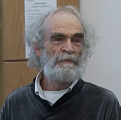

1943-
Mikhail Gromov

Portrait: Institut des Hautes Études Scientifiques, CC BY 3.0, Wikimedia Commons.
Events (5)
- 1975Superrigidity and arithmeticity of lattices
developer · Number theory
- 1981Geometric group theory
originator · Algebra
- 1981Gromov polynomial growth via geometry
developer · Group & representation theory
- 1985Symplectic topology
developer · Differential geometry
- 1989Contact topology and the h-principle (Eliashberg)
originator · Topology